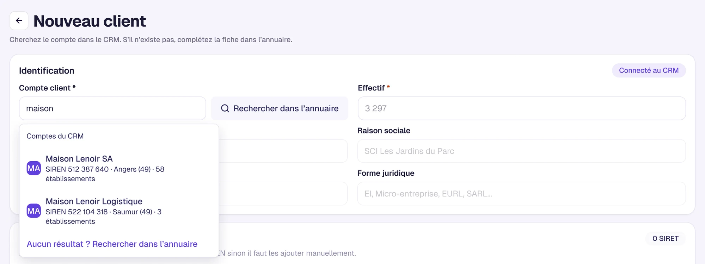
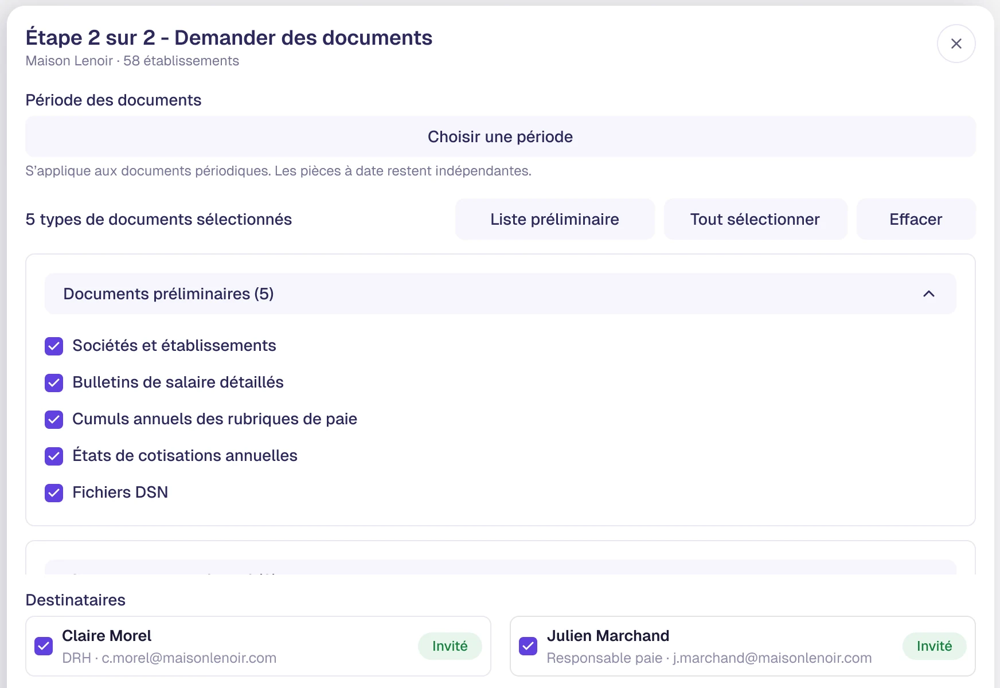
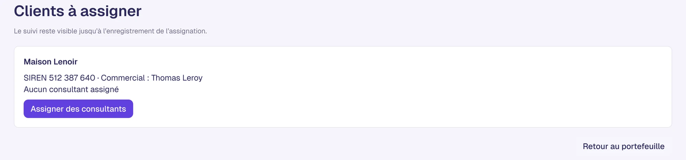
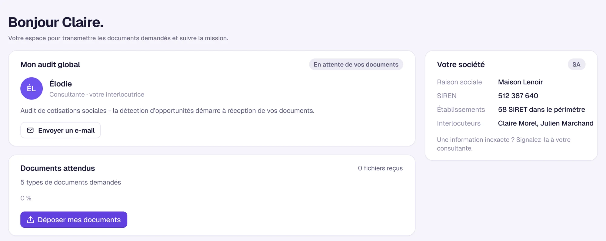
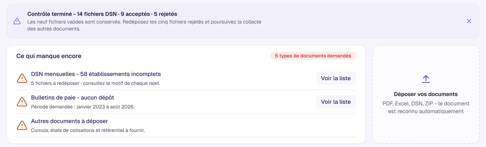
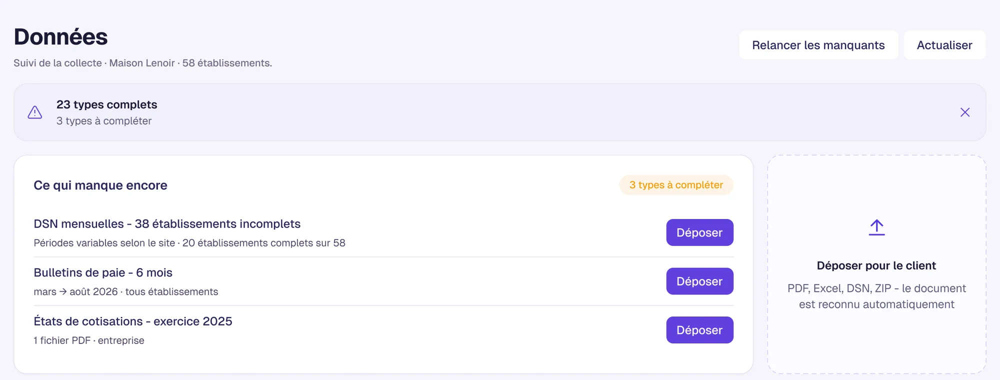
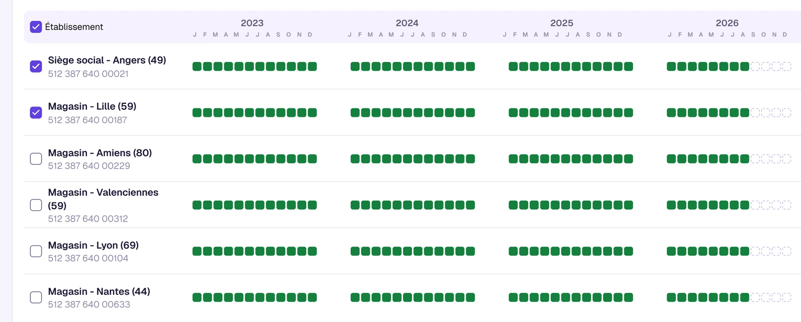
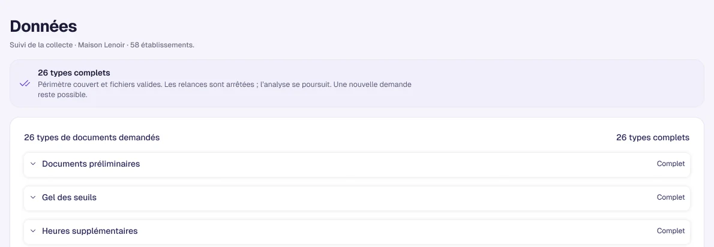
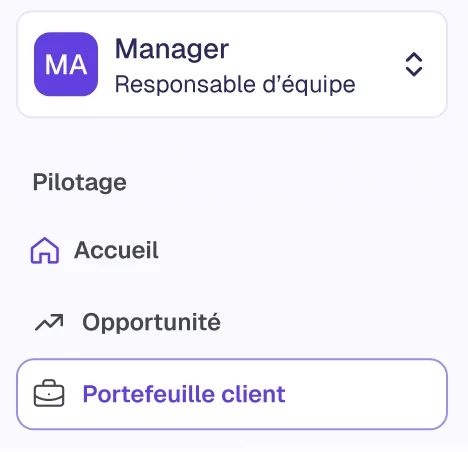

Product designer B2B · Du MVP au produit, design systems AI-readyRéunir les documents d'un client, de 0 à 100 %.
Discovery UX puis conception de la collecte de documents d'un cabinet de conseil RH et finance : huit entretiens utilisateurs, une synthèse menée avec l'IA et vérifiée à la main. Un principe : voir ce qui manque dès la réception.
Rôle
Product Designer B2B
Contexte
Cabinet de conseil RH et finance nom confidentiel
Méthode
8 entretiens · IA sous contrôle
Durée
De juillet à octobre 2026
Équipe
Trois personnes, côté produit
Statut
Transmis aux développeurs pas encore en service
Déclarations sociales (DSN) 6 établissements × 12 mois
0 % Demande envoyée
Demande envoyée
Premiers dépôts
Collecte partielle
Fichiers à redéposer
Collecte complète
Siège
Validée
Non conforme
Manquante
DSN mensuelles4 établissements incomplets
Bulletins de paie6 mois
États de cotisationsexercice 2025
Illustration du principe, données fictives.
« Tu fais 12 échanges pour que le client ne te renvoie jamais le bon mois. »
Chaque mission du cabinet commence par la même étape : obtenir du client ses documents sociaux (bulletins de paie, déclarations, états de cotisations), parfois sur trois ans et pour des centaines d'établissements. Cette collecte reposait sur des e-mails, un espace de partage de fichiers et des tableurs. Tant que ces documents manquent, l'audit attend. Les opportunités aussi. Une opportunité, c'est ce que le cabinet repère en croisant ces données : elle permet à un commercial de proposer d'autres prestations au client.
Obtenir
Des allers-retours sans fin avec le client, et aucun signal quand un fichier est déposé.
« On passe quelques jours entre le moment où il a déposé les docs et le moment où on s'en rend compte. »
Vérifier
Impossible de savoir si un dossier est complet sans ouvrir les fichiers un par un.
« Des fois, le truc s'appelle 2025, tu ouvres, c'est 2024. »
Retraiter
Convertir, nettoyer et normaliser les données de paie, jusqu'à mille rubriques à classer à la main pour un seul dossier.
« Ça peut arriver où on actualise et on attend trois heures. »
Refaire chaque année
Chaque début d'année, la même collecte recommence pour les dossiers en cours et mobilise les équipes pendant des mois.
Ce que ça coûte
Ordres de grandeur cités en entretien, placés sur une échelle logarithmique.
Attendre qu'un tableur s'actualisejusqu'à 3 h
Valider un dossier, côté manager0,5 à 2 jours
Retraiter les données d'un dossier30 min à 4 jours
Recevoir les documents d'un client2 à 3 mois
Refaire la collecte, chaque début d'année3 à 4 mois
1 h
1 jour
1 semaine
1 mois
4 mois
Pour tenir sur la même échelle, une journée vaut huit heures et un mois vingt jours. Les trois premières lignes comptent du temps passé (par dossier pour la validation et le retraitement), les deux dernières des durées calendaires.
Avant de dessiner quoi que ce soit : nommer les nœuds, et estimer ce qu'ils coûtent.
02 · Écouter
L'enquête : huit entretiens, quatre pôles
En juillet 2026, j'ai interrogé celles et ceux qui vivent la collecte : des consultants, un expert paie, des managers, une responsable opérationnelle, une ingénieure d'affaires. Chaque entretien a été enregistré, puis complété par l'observation de dossiers réels à l'écran. Le cabinet travaille en pôles d'expertise : le plus avancé sur le sujet a servi de pilote.
Pôle pilote5 entretiens
Manager
Manager
Consultante senior
Consultant expert technique
Expert paie
Pôle 21 entretien
Consultant, responsable d'équipe
Pôle 31 entretien
Responsable opérationnelle
Pôle 41 entretien
Ingénieure d'affaires
Une case par personne interrogée. Les pôles ne sont pas nommés.
Le corpus
Huit entretiens enregistrés et transcrits.
Trois documents de procédure internes.
Des dossiers réels, ouverts à l'écran avec les consultants.
Entretiens et observation
Huit entretiens enregistrés, chacun complété par une observation.
Parcours et chemin critique
Chaque étape de la collecte, de la signature au rapport.
Persona et empathy map
Un persona principal : la consultante qui mène la collecte.
Douleurs et pistes
Une matrice : chaque difficulté reliée à une piste de solution.
Cinq entretiens dans un pôle, trois ailleurs : assez pour voir ce qui se répète, et repérer ce qui semble propre à un métier.
03 · Recouper
L'IA rassemble, je vérifie
Huit entretiens, ce sont des heures d'enregistrement. J'ai confié à l'IA ce qu'elle fait vite, et gardé ce qui engage. Dans ce métier d'audit et d'optimisation, le savoir-faire est complexe et chaque levier compte : une réponse plausible ne suffit pas. Chaque rendu a donc été relu, corrigé et recadré, point par point.
Transcrire
L'IAChaque entretien enregistré est transcrit et résumé automatiquement.
MoiJe mène l'entretien et l'observation.
Interroger
L'IAUn carnet d'IA ne répond qu'à partir des transcriptions et des documents, et cite chaque passage.
MoiJe pose les questions, j'analyse chaque rendu et je le recadre.
Recouper
L'IAElle regroupe les verbatims, propose des fréquences, relie douleurs et pistes.
MoiJe recompte entretien par entretien et je relis chaque citation dans sa transcription.
Prototyper
L'IAElle génère les écrans et le prototype de recette.
MoiJe fixe le parcours, les textes et les cas limites ; je la corrige sur les logiques métier et j'audite la cohérence.
La même règle que pour le produit : l'outil alerte, l'humain décide.
Citations reluesChaque verbatim retenu est relu dans sa transcription d'origine.
Fréquences recomptéesChaque « 5 sur 5 » est vérifié entretien par entretien.
Dossiers réelsLes constats sont confrontés à des dossiers ouverts à l'écran.
Validation avec l'équipeConstats et décisions sont présentés au manager et à la product manager.
Un exemple.L'IA m'a affirmé que la DSN pouvait servir pour une opportunité donnée. Vérification faite, c'était faux. Sur les logiques métier, je ne lui donne jamais raison sur parole.
Ce que les entretiens ont établi
Fréquence relevée dans les cinq entretiens du pôle pilote. Chaque constat garde ses citations.
La collecte est un ping-pong, sans signal quand un fichier arrive.
5 sur 5
« Tu fais 12 échanges pour que le client ne te renvoie jamais le bon mois. »
« On passe quelques jours entre le moment où il a déposé les docs et le moment où on s'en rend compte. »
Le retraitement des données est le premier poste de temps : chaque logiciel de paie a sa propre mise en page.
5 sur 5
« Le plus gros job, ça va être de nettoyer cette data. »
Un dossier incomplet ne se voit pas à la réception : on le découvre en cours d'analyse.
4 sur 5
« Si tu manques un mois, tout est faux. »
La DSN est la seule donnée normée, celle qui fait foi.
2 sur 2 concernés
« En vert j'ai la DSN, en rouge je ne l'ai pas. »
L'outil doit alerter, jamais décider à la place du consultant.
2 sur 5, explicitement
« On ne cherche plus, on perd la compétence. »
Le suivi est déclaratif : rien ne garde la trace de ce qui a été vérifié.
Transversal
« Il n'y a pas de traçabilité vraiment de tous les éléments que j'ai check. »
« Dès qu'ils partent en Excel, ça part dans un autre monde. Tu n'as plus de visibilité. »
Quatre pôles, quatre façons de faire : un même document peut être demandé plusieurs fois au même client.
Contexte
L'IA accélère le dépouillement. Elle ne signe aucun constat : chacun a été vérifié, un par un.
04 · Trancher
Huit arbitrages, et ce qu'ils écartent
Chaque décision répond à un constat et, le plus souvent, dit ce qu'elle écarte. Deux arbitrages cadrent le chantier, six dessinent le produit.
Constats
Un ping-pong sans signal
Le retraitement, premier poste de temps
L'incomplétude invisible
La DSN fait foi
Alerter, jamais décider
Un suivi déclaratif
Quatre pôles, quatre façons de faire
Arbitrages
01Deux chantiers plutôt qu'un
02Un pôle pilote d'abord
03Voir ce qui manque dès la réception
04Zéro saisie ajoutée
05Demander le minimum utile
06Côté client : une liste et un dépôt guidé
07L'outil alerte, le consultant décide
08Ne relancer que le manquant
Du constat à la décision : survolez une ligne pour suivre le fil.
Deux arbitrages pour cadrer
Avant les écrans : réduire le champ du projet pour pouvoir livrer.
Arbitrage 01
Deux chantiers plutôt qu'un
La collecte d'un côté, la fiabilité des données de l'autre : deux chantiers, deux rythmes de livraison. Une exigence a été transmise au second : prévoir un gabarit par logiciel de paie.
Répond àLe retraitement, premier poste de temps
ÉcartéLe projet unique, qui mêle collecte et détection d'anomalies.
Arbitrage 02
Un pôle pilote d'abord
Le pôle où l'enjeu est le plus fort et le processus le plus mûr sert de terrain. Les trois autres donnent le contrepoint.
Répond àQuatre pôles, quatre façons de faire
ÉcartéLancer l'outil dans tous les pôles en même temps.
Six arbitrages pour concevoir
Ils se retrouvent, repère par repère, dans le parcours qui suit.
Arbitrage 03
Voir ce qui manque dès la réception
Chaque dépôt est contrôlé à l'arrivée : bon format, bonne période, mois manquants. Une vue par établissement et par mois montre les trous d'un coup d'œil.
Répond àL'incomplétude invisible, et la DSN qui fait foi
ÉcartéOuvrir les fichiers un par un pour vérifier.
Arbitrage 04
Zéro saisie ajoutée
Aucun statut à remplir à la main : chaque état du dossier découle d'une action réelle.
Répond àUn suivi déclaratif
ÉcartéUn outil de suivi à renseigner. Le précédent avait été abandonné, trop long à remplir.
Arbitrage 05
Demander le minimum utile
Un socle de documents sans lequel aucun dossier ne démarre, et un pack de collecte standard.
Répond àUn ping-pong sans signal
ÉcartéLe questionnaire exhaustif envoyé au client.
Arbitrage 06
Côté client : une liste et un dépôt guidé
Le client a besoin d'une consigne claire, pas d'un outil de gestion de projet. Le fichier dit lui-même où il va : l'établissement et le mois sont lus à chaque dépôt.
Répond àUn ping-pong sans signal
ÉcartéLe portail complet avec tableau de bord : un client préfère décrocher son téléphone.
Arbitrage 07
L'outil alerte, le consultant décide
Un fichier refusé affiche son motif en clair et l'action attendue. L'analyse, elle, reste entre les mains des experts.
Répond àAlerter, jamais décider
ÉcartéL'audit entièrement automatique, une boîte noire qui gommerait les anomalies qu'eux seuls savent repérer.
Arbitrage 08
Ne relancer que le manquant
La relance ne porte que sur les documents encore attendus : les pièces complètes ne sont pas redemandées. Les rappels automatiques s'arrêtent dès qu'un document est complet et validé.
Répond àUn ping-pong sans signal
Un vocabulaire commun
Quatre pôles, quatre façons de nommer le suivi des documents. La conception fixe quelques termes.
Pack de collecte
La liste des documents demandés, avec statuts et échéances.
Socle minimal
Ce sans quoi un dossier ne démarre pas.
Vue périmètre
La grille des établissements, mois par mois.
Déposant guidé
Le client : il dépose, il ne pilote pas un projet.
Dire non fait partie de la conception : sept arbitrages sur huit nomment ce qu'ils écartent.
05 · Concevoir
Le parcours, de 0 à 100 %
Quatre rôles se passent le même dossier, en onze étapes, de la création du client aux opportunités. La collecte complète compte 26 types de documents : les cinq plus importants sont demandés d'abord, le reste vient après. Sur chaque écran, un repère dit ce que fait l'interface, et de quel arbitrage elle vient.
CommercialTrouve le client, l'inscrit dans le CRM, valide l'échange, puis crée le client sur la plateforme.
Demande et invitationÀ la création du client, deux e-mails partent : une invitation à se connecter, puis la demande des cinq premiers documents.
ManagerReçoit le nouveau dossier et le confie au consultant qu'il estime le mieux placé, avant l'audit.
ClientSe connecte, dépose les cinq premières pièces, corrige ce qui est rejeté.
ConsultantPrend le dossier d'audit, suit la collecte, dépose pour le client ou relance.
Manager, après la missionRetrouve les opportunités, tirées des données croisées et de l'expertise des pôles.
Commercial
Manager
Client
Consultant
CommercialÉtape 1 sur 11
Le client vient du CRM
Le commercial trouve un client et l'inscrit dans le CRM. Il passe l'appel, valide l'échange, puis crée le client sur la plateforme : il tape le nom du client, et la raison sociale, le numéro SIREN de l'entreprise et ses établissements arrivent du CRM.
Décision discutéeL'autre option était de créer le client sur la plateforme, puis de l'importer dans le CRM. J'ai proposé l'inverse, par un appel API : la plateforme récupère le compte déjà créé dans le CRM, puis y met à jour la fiche client.
0sur 26 types complets

Arbitrage 04 · Zéro saisie ajoutée
Le compte vient du CRM
Raison sociale, SIREN, établissements : ce qui est déjà connu n'est pas ressaisi.
Cas limite
Et sinon, l'annuaire
Si le compte n'existe pas encore, la fiche se complète depuis un annuaire d'entreprises.
CommercialÉtape 2 sur 11
La demande part avec l'invitation
C'est la dernière étape de la création, et c'est le commercial qui l'envoie. La liste préétablie à partir des entretiens tient en cinq documents, les plus importants : le reste viendra après.
0sur 26 types complets

Arbitrage 05 · Le minimum utile
Cinq documents d'abord
Les plus importants : le socle minimal, sans lequel un dossier ne démarre pas.
Deux e-mails
Une invitation, puis une demande
Le client reçoit un premier e-mail pour se connecter, un second pour lui dire que cinq documents sont attendus dans son espace.
ManagerÉtape 3 sur 11
Le manager relie le dossier au bon consultant
Le nouveau client arrive chez le manager du pôle. Il n'a qu'une chose à faire, avant l'audit : le confier au consultant qu'il estime le mieux placé.
Piste pour la V2Une vue des consultants et de leurs missions en cours, pour choisir plus facilement à qui confier le dossier.
0sur 26 types complets

Avant l'audit
Assigner, rien de plus
Un clic ouvre le choix : jusqu'à deux consultants par client, par exemple un junior et un senior.
Arbitrage 04 · Zéro saisie ajoutée
Le dossier arrive tout seul
Créé par le commercial, le client apparaît ici avec son contexte : rien à redemander.
ClientÉtape 4 sur 11
L'espace est prêt, le compteur à zéro
Le client a reçu ses deux e-mails et se connecte. Il trouve les cinq documents attendus, un bouton pour déposer, et le nom de sa consultante.
0sur 26 types complets

Arbitrage 06 · Liste et dépôt guidé
Un seul geste demandé
Cinq documents attendus, un bouton : déposer. Le compteur part de zéro.
Ce que lit le client
La suite est annoncée
L'espace dit ce qui se passera : la détection d'opportunités démarre à réception des documents.
ClientÉtape 5 sur 11
Premier dépôt, premier contrôle
Quatorze fichiers déposés : neuf acceptés, cinq rejetés. Le client le sait tout de suite, sans attendre un retour du cabinet.
0sur 26 types complets

Constat · 4 sur 5
Le contrôle a lieu à l'arrivée
Format, période, établissement : ce qui passe est gardé, ce qui bloque est signalé aussitôt.
Arbitrage 06 · Liste et dépôt guidé
Une consigne, pas un tableau de bord
Trois lignes : ce qui manque, et le bouton pour agir.
ClientÉtape 6 sur 11
Cinq fichiers à redéposer
Chaque rejet affiche son motif et ce qu'il faut faire, pour que personne n'ait besoin d'appeler.
0sur 26 types complets
Arbitrage 06 · Liste et dépôt guidé
Le fichier dit où il va
Le SIRET (le numéro de l'établissement) et le mois sont lus dans chaque fichier : rien à renseigner.
Arbitrage 07 · L'outil alerte
Un motif, une action
« Période illisible : réexportez ce fichier depuis votre logiciel de paie. » Le rejet explique, et guide.
ConsultantÉtape 7 sur 11
Le consultant prend le dossier
Les cinq premières pièces arrivées, le consultant désigné prend le dossier d'audit et le reste de la liste est demandé. L'écran montre la collecte plus avancée, à 23 types complets sur 26. Le consultant voit ce que voit le client, dépose pour lui ou relance.
23sur 26 types complets

Arbitrage 08 · Relancer le manquant
Relancer d'ici, en un geste
La relance part de l'écran de suivi, déjà limitée à ce qui manque.
Constat · 5 sur 5
Une seule liste pour deux lecteurs
Client et consultant lisent le même état : plus d'aller-retour pour savoir où en est le dossier.
ConsultantÉtape 8 sur 11
La vue périmètre
Une ligne par établissement, une case par mois, sur toute la période à couvrir. Les trous se voient sans ouvrir un seul fichier.
23sur 26 types complets

Arbitrage 03 · Voir ce qui manque
Une case, un mois, un établissement
« En vert j'ai la DSN, en rouge je ne l'ai pas. » La phrase d'un expert paie est devenue l'écran.
Cas limite
Manquant n'est pas hors période
Un établissement qui ouvre ou ferme en cours d'année n'a pas de trou : la grille distingue les deux.
ConsultantÉtape 9 sur 11
Relancer, mais seulement le manquant
La fenêtre de relance ne coche que les documents encore attendus, avec leurs périodes.
23sur 26 types complets
Arbitrage 08 · Relancer le manquant
Seul le manquant est coché
Les pièces complètes ne sont pas redemandées.
Constat · 5 sur 5
Jusqu'à la période
La relance précise les mois attendus, pas seulement le nom du document.
ConsultantÉtape 10 sur 11
Collecte complète
26 types sur 26 : le périmètre est couvert et les fichiers sont valides. Le consultant a tout pour mener l'audit jusqu'au bout.
26sur 26 types complets

Arbitrage 08 · Relancer le manquant
La collecte s'arrête d'elle-même
Périmètre couvert, fichiers valides : les rappels cessent sans que personne y pense.
Arbitrage 04 · Zéro saisie ajoutée
100 %, sans une saisie
Aucun statut n'a été rempli à la main entre la demande et le dossier complet.
ManagerÉtape 11 sur 11
Après la mission, les opportunités
La détection a commencé dès la réception des documents. Une fois la collecte achevée et la mission terminée, le manager du pôle en trouve le résultat dans une section « Opportunité », nourrie par les données collectées et par l'expertise métier des pôles : de quoi permettre à un commercial de proposer d'autres prestations.
26sur 26 types complets
Données collectées26 types de documents, contrôlés à l'arrivée.
Expertise métierCelle des quatre pôles interrogés.

Schéma de principe. L'extrait du menu vient de la maquette ; l'écran lui-même n'est pas montré ici.
Extrait de maquette, données fictives. Faites glisser l'image pour voir la suite.
Trois cas limites qui ont pesé
Ils viennent des entretiens, pas d'une liste de cas d'école.
Un mois manquantUn seul mois absent fausse les calculs de l'année : la vue par établissement le signale dès le dépôt.
Un fichier trompeurMal nommé ou au mauvais format, il est contrôlé à l'arrivée et refusé avec son motif.
Des établissements qui bougentSur des centaines de sites, certains ouvrent ou ferment en cours de période : la grille distingue un mois manquant d'un mois hors période.
Chaque écran de la collecte porte au moins un arbitrage : rien n'est là pour faire joli.
06 · Livrer
Le résultat : ce que la mission a produit
La conception a été transmise aux développeurs ; la fonction n'est pas encore en service.
8entretiens, dans quatre pôles d'expertise
8arbitrages : deux pour cadrer, six pour concevoir
4rôles sur un même parcours : commercial, manager, client, consultant
26types de documents suivis, de 0 à 100 %
Les livrables
Dossier de cadrage : problème, contexte, champ du projet.
Persona principal et empathy map.
Matrice des douleurs et des pistes.
Parcours de bout en bout et chemin critique.
Socle minimal de documents pour le pôle pilote.
Cartographie des croisements de données entre les pôles.
Exigence transmise au chantier de fiabilité des données : un gabarit par logiciel de paie.
Prototype du parcours, pour les quatre rôles, avec sa planche de recette.
Un audit avant la recette
J'ai relu le parcours d'un rôle à l'autre, d'un seul tenant, et j'ai relevé les incohérences : textes qui ne correspondent pas à l'état affiché, chiffres de référence qui diffèrent d'un écran à l'autre, doublons de nommage, trous dans le parcours.
Huit situations à rejouer dans le prototype
SIREN invalide
Client déjà présent
Source indisponible
E-mail non livré
Invitation expirée
Transfert interrompu
Aucun document à relancer
Compte non autorisé
Un gain proposé sans une ligne de développement : activer l'alerte de dépôt de l'espace de partage déjà en place.
Et les chiffres ?
Il n'y a pas encore de chiffres après mise en service, et je n'en invente pas. La discovery a montré que le temps de collecte n'était mesuré nulle part : la conception prévoit donc d'horodater chaque étape, demande, dépôt, dossier complet, pour disposer d'une base de comparaison.
Le handoff
Les développeurs ont salué la présentation de la conception et la configuration de ses composants dans Figma.
Ce que j'en retiens
Un bulletin de paie ne se lit pas comme un document générique : chaque logiciel de paie a sa mise en page, il faut un gabarit par logiciel.
Un outil de suivi qui demande de saisir des statuts à la main finit abandonné.
Le client ne veut pas suivre un projet en ligne : il veut une consigne de dépôt claire.
Sur les logiques métier, l'IA peut se tromper : je vérifie avant de lui donner raison.
Travaillons ensemble
Un outil métier à rendre lisible ?
Parlons de votre produit : 30 minutes pour comprendre votre contexte.
Réponse sous 48 h. Collaboration possible en freelance, en régie ou sur mission ciblée.
Les extraits d'écran sont mes maquettes, avec des données fictives. Les citations viennent des entretiens et sont attribuées à un rôle, pas à une personne. Le nom du cabinet et ceux de ses pôles restent confidentiels.